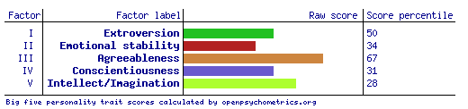

Personal Profile
What is my Myers-Briggs test results?
I am a INFP personality ("The Mediator"). I find this true as I look at both sides of most situation and always wants to make everyone fulfilled and happy.
What is my learning style test results?
I am majorly a visual learner, but I'm also a quater auditory learner. I known this for while as I always been very observing for of surroundings. And I always learn more when I see it getting done oppose to someone telling me or reading about it.
What is my Big Five Personality Traits?

I somewhat agree with this. I do agree Factor 1 as I am about 50% extro/introverted. I enjoy being social but I also want me time.
What do these results mean to me?
I personally don't take these results too seriously but I feel all they do really is just confirm something you already knew about yourself. Like, you know yourself the best, not a personality test. Only you know how you would react under situation. So overall, I don't think anyone should take these test too seriously, I mean its good to know more about yourself but a person can change over time. Such as quiet person can become more social, its all up to time and them putting themselves a difficult situation. So yeah, overall its something you should know, but not taken extremely seriously.
How would these results influence behaviour in a team?
I think these results can bring a lot to the team. As an INFP, I am able to understand both sides of a disagreement and hopefully be able to mediate the disagreement and come up with a possible outcome that benefits both sides. I feel that as visual learner, I should be focusing more on how the project aesthetically looks. And I should help make it look clean and easy to understand. From the big 5, my agreeableness is high, so I'll be easy going with everyone.
How should I take this into account when forming a team?
When forming a team, I should be more focused on the creative side of the project. I am very reserved person but I'll be able to adapt to different group dynamics. I should be fine being in any sort of team, unless they have very strict values and little creative freedom.